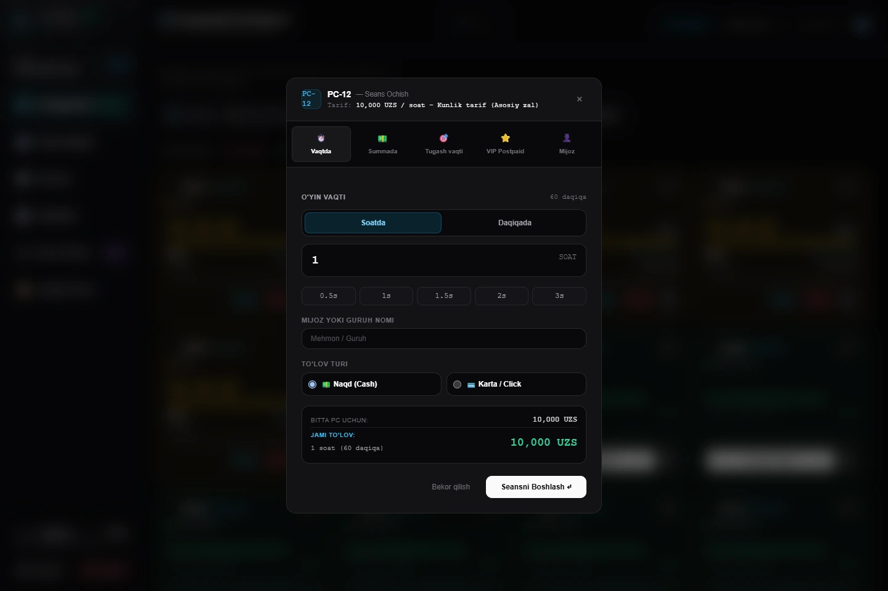
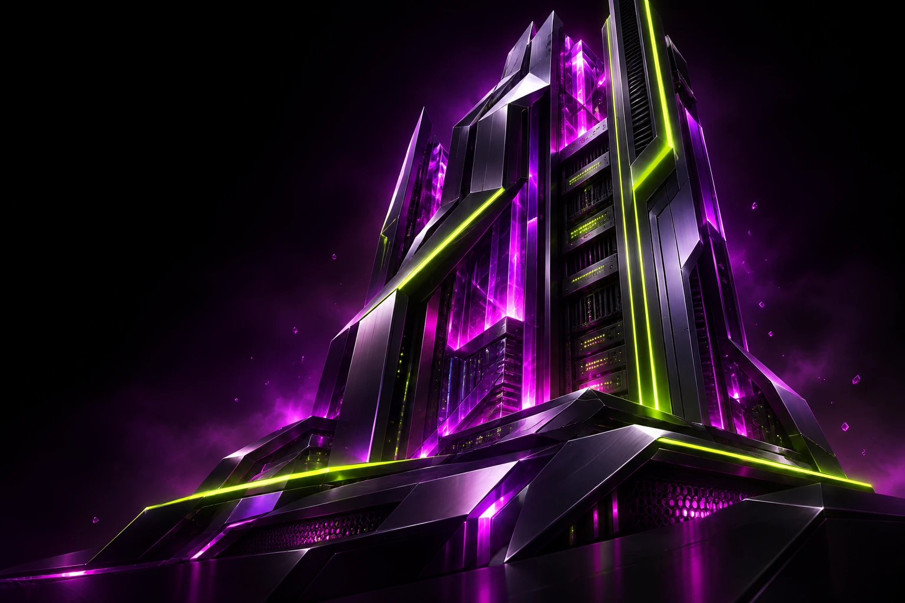
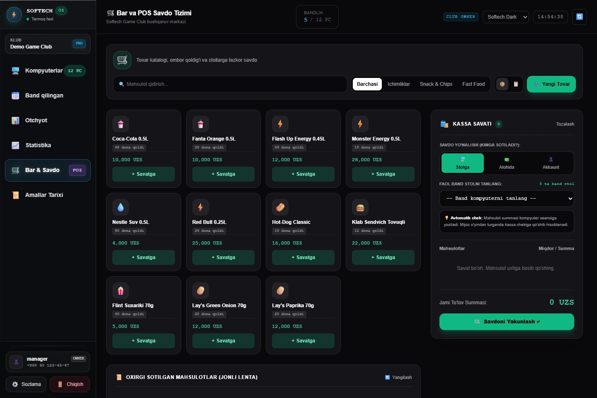
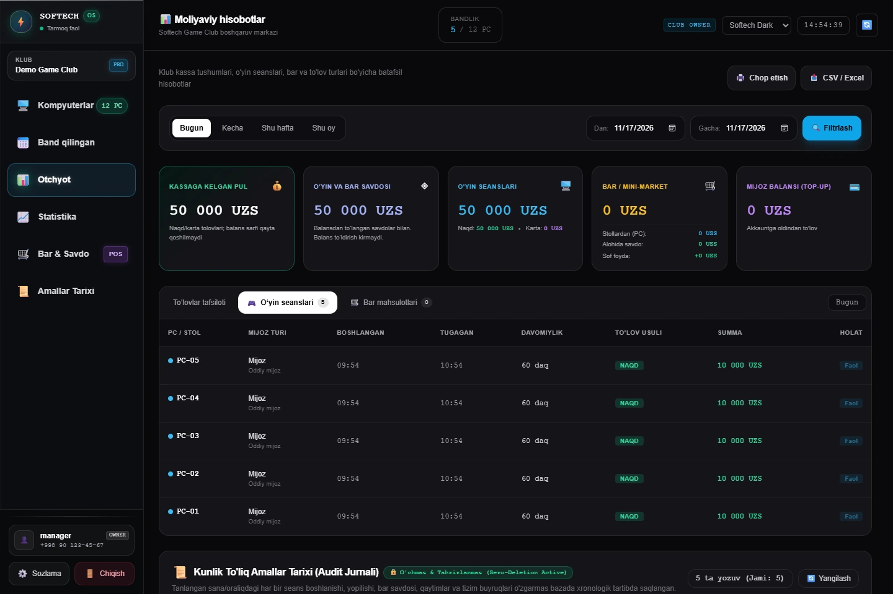
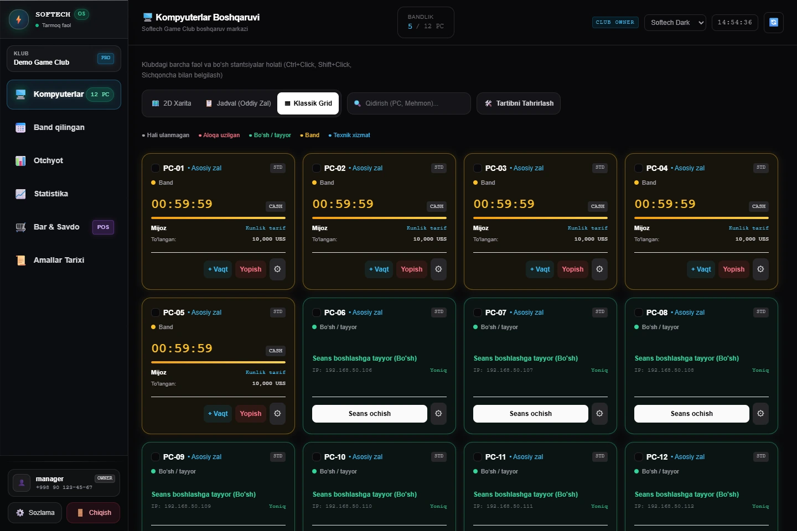
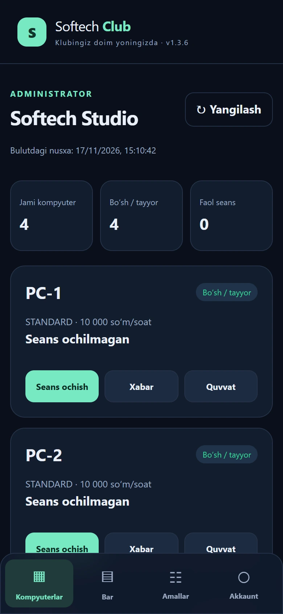

Har bir daqiqa.
O‘z hisobida.
Summa, vaqt yoki VIP Postpaid. Seansni boshqa PC’ga ko‘chiring — mijozning hisobi u bilan davom etadi.

AMALDAGI INTERFEYS
SOFTECH / CLUB CONTROLO‘YIN DAVOM ETSIN. BOSHQARUV SIZDA.
Seanslardan tushumgacha — barchasi bir tizimda.
Kompyuter zalingizni boshqaring. Biz tartibini ushlaymiz.
/ 01 — IMKONIYATLAR
Administrator uchun qulay ish joyi.
Klub egasi uchun tushunarli raqamlar.
Summa, vaqt yoki VIP Postpaid. Seansni boshqa PC’ga ko‘chiring — mijozning hisobi u bilan davom etadi.

AMALDAGI INTERFEYSBar buyurtmasini seans hisobiga qo‘shing. To‘lov, qolgan vaqt va qaytimni bir joyda ko‘ring.

AMALDAGI INTERFEYSO‘yin, bar va balans to‘ldirishni alohida kuzating. Tushum qayerdan kelayotganini biling.

AMALDAGI INTERFEYSSOFTECH BILAN ISH JARAYONI
Hozirgi server dasturidan olingan tasvirlar. Harakat davomida — yangi imkoniyat.
Qaysi PC bo‘sh, qaysi birida seans davom etyapti — barchasi server oynasida. Grid, jadval yoki 2D xaritadan foydalaning.
Qanday ishlaydi? Qo‘llanma ↗
Soatda, daqiqada, aniq summada yoki VIP Postpaid. Tanlangan xona tarifi asosida hisob ochish oynasining o‘zida ko‘rinadi.
Qanday ishlaydi? Qo‘llanma ↗Mahsulotni tanlang. Kompyuter hisobiga qo‘shing yoki alohida soting. Savat, mahsulot qoldig‘i va savdo bir joyda.
Qanday ishlaydi? Qo‘llanma ↗O‘yin, bar va balans to‘ldirish alohida ko‘rinadi. Kun yoki davrni tanlang va saqlangan amallar asosidagi hisobotni kuzating.
Qanday ishlaydi? Qo‘llanma ↗
/ 03 — MOBIL PANEL
Klubda bo‘lmasangiz ham, uning ishidan xabardor bo‘ling. Telefoningizdan brauzerni oching — panel yoningizda.
Hisobotlar, tariflar va xodimlar boshqaruvi.
Seans ochish, bar mahsulotini qo‘shish va PC’larni kuzatish.
Klub serveri o‘chiq paytda ham bulutga saqlangan hisobotlarni ko‘ring.
/ 04 — BOSHLASH OSON
Kompyuterlar soni va ish tartibingizni birga ko‘rib chiqamiz.
Server, client kompyuterlar va tariflarni sozlashdan boshlaymiz.
Kassada ishni boshlang. Mobil panel orqali natijalarni kuzating.
SOFTECH BILAN ISHLAYAPSIZMI?
Seans ochish, bar buyurtmasi, qaytim va mobil panel. Kerakli funksiyani oddiy qadamlar bilan o‘rganing.
Klub ichidagi server va client kompyuterlar mahalliy tarmoq orqali ishlaydi. Internet uzilganda mahalliy seanslar davom etishi mumkin; bulutga sinxronlash aloqa tiklanganda davom etadi. Litsenziyaning oflayn muddati amal qiladi.
Yo‘q. Softech client seans boshlanganda qulflash oynasini yopadi. Kompyuterdagi ish stoli yoki o‘zingiz foydalanadigan o‘yinlar dasturi ochiq qoladi.
Ha. Seans bilan birga unga biriktirilgan bar hisobi ham davom etadi. Xonalar tarifi farq qilsa, qolgan vaqt ko‘chirishdan oldin qayta hisoblanib ko‘rsatiladi.
Administrator kundalik seans va bar amallarini bajaradi. Menejer hisobotlarni ko‘radi, tarif va xodimlarni boshqaradi. Masofaviy amallar uchun klub serveri va internet aloqasi ishlashi kerak.
Klubingizdagi kompyuterlar soni va kerakli sozlamalarni @softech_support orqali yozing yoki +998 99 563 45 16 raqamiga qo‘ng‘iroq qiling. Jamoamiz ulanish va narx bo‘yicha ma’lumot beradi.
KLUBINGIZ UCHUN SOFTECH
Klubingiz haqida yozing. O‘rnatish va narxni birga kelishamiz. So‘rov matnini shu yerda tayyorlab, Telegram orqali jamoamizga yuborishingiz mumkin.
+998 99 563 45 16 ↗To‘g‘ridan-to‘g‘ri @softech_support ↗Parol yoki litsenziya kalitini yozmang. Ma’lumotlar bu saytda saqlanmaydi; Telegramda yuborishingizdan oldin so‘rov jamoamizga yetib bormaydi.
KEYINGI BOSQICHGA TAYYORMISIZ?